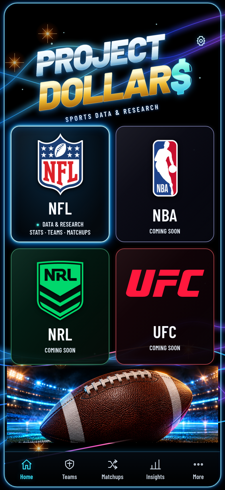
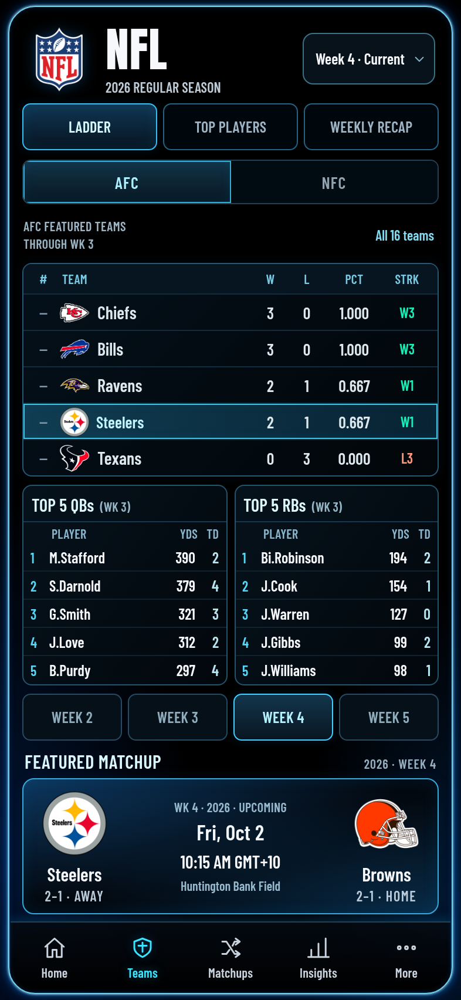
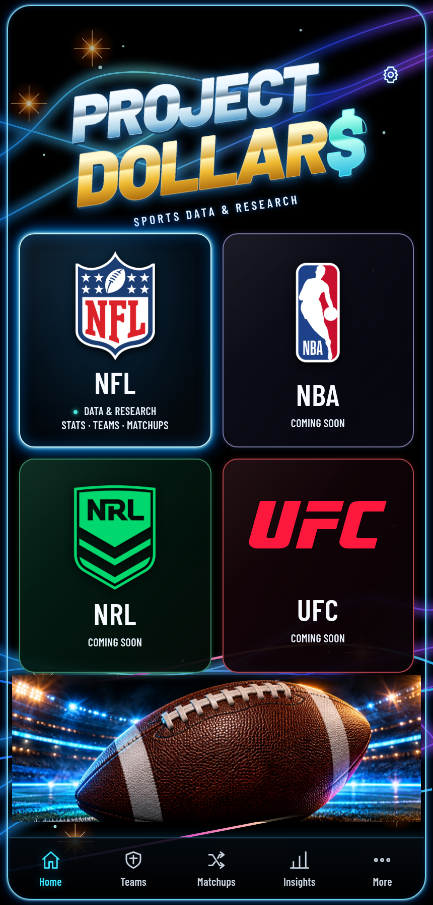
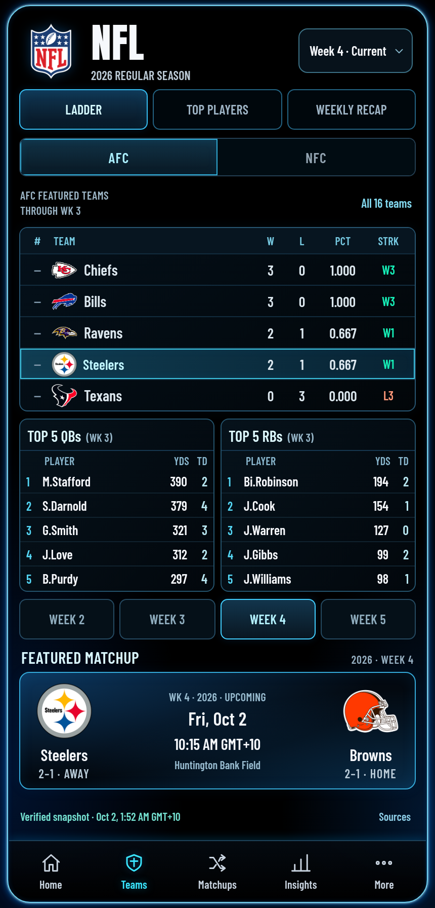
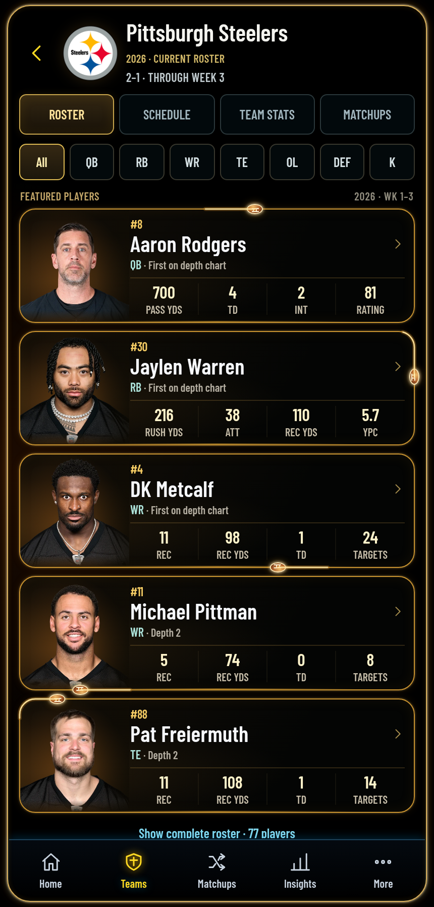

Home · 393 × 852



NFL · 393 × 852



Steelers · 393 × 852


Home · 430 × 896



NFL · 430 × 896



Steelers · 430 × 896



Left: previous published implementation. Right: final refinement captures. Approved source: the original eight-screen chat attachment; its bytes were unavailable, so this evidence compares actual browser renders, not reference pixels.




